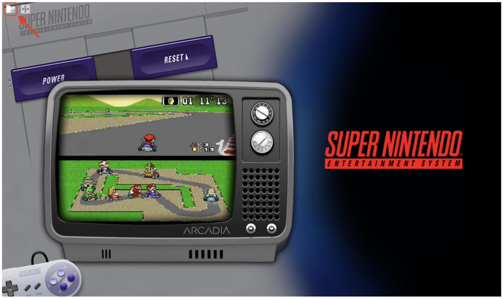
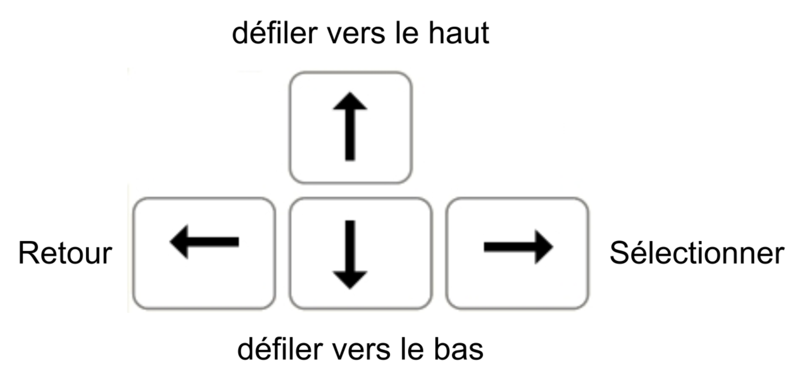
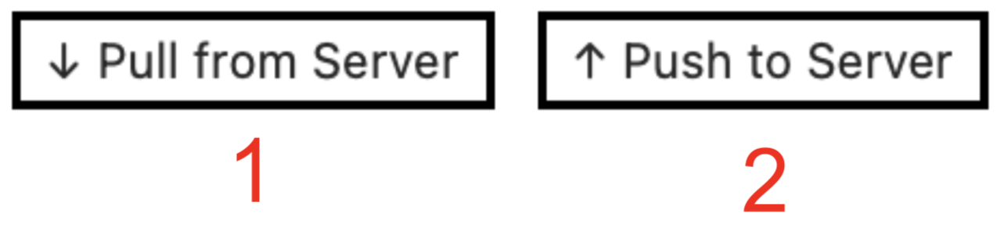

Guide Utilisateur
Connection au site
Étape 1 : Se connecter au WIFI du club NPC
Étape 2 : Ouvrir son navigateur WEB préférer et aller sur le site suivant :
Étape 3 : Se connecter à sa session pour sauvegarder sa partie. Pour ça sélectionné l’icône en forme de dossier en haut à gauche de l’écran

Connectez-vous-en remplissant les champs en haut à gauche de la nouvelle page ouverte, puis sélectionner pull from server en haut à droite, pour charger vos sauvegardes dans votre session. (A noté que vous n’êtes pas obligé de vous connecter pour jouer, mais vous ne pourrait pas sauvegarder sur le serveur dans ce cas)
 (A noté que lorsque vous n’êtes pas connecté, le bouton en haut à droite est
(A noté que lorsque vous n’êtes pas connecté, le bouton en haut à droite est pull Default Config, il permet de récupérer la configuration par défaut du serveur pour votre session)
Étape 4 : Retourner a la page principale et sélectionnée un émulateur puis un jeu en cliquant sur les noms ou les logos
Vous êtes prêt à jouer !
Étape 5 : Une fois votre session de jeux terminée, n’oubliez pas d’enregistrer et d’envoyer votre sauvegarde au serveur dans la page de l'étape 3, puis en sélectionnant Push to Server en haut à droite de la page.
Navigation
Pour naviguer dans l’émulateur, vous pouvez utiliser les flèche directionnelle ou votre souris. 
Contrôle émulateur (par défaut / cheat)
| Touche | Action |
|---|---|
| espace | Accélération du jeu(continue) |
| L(maintenir) | Accélération du jeu(discontinue) |
| P | Pause/Play |
| K | Pause |
| H | Reset |
| N | Shader |
| F1 | Parametre de l'émulateur1 |
Gestion des sauvegardes
Vous pouvez gérer les documents générés par votre utilisation des émulateurs depuis la page, de l'étape 3 de même que vos sauvegardes. Accéder au bouton de récupération/envoie de donnée en haut à droite de la page.  1. Permet de récupérer les données stockées sur le serveur pour votre compte. 2. Permet d’envoyer au serveur vos données pour qu’elle y soit stockée.
Paramètres spéciaux
Activer le tactile sur émulateur DS
Étape 1 : Lancer le jeu souhaité, puis faite F1
Étape 2 : Naviguer dans le menu à l’aide de la souris ou des flèches directionnelles et descendait jusqu’à trouver le sous menu a sélectionné qui est option avec un logo de fusée.

Étape 3 : Sélectionné le paramètre Touch mod, pour l’activé.
Étape 4 : Choisie le contrôle tactile que tu souhaites utiliser.
Guide utilisateur format PDF
-
Attention l’émulateur est en QWERTY il faut donc le prendre en compte lors du maping des touches ↩